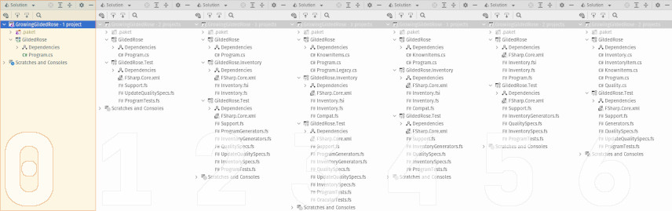

Time heals all wounds.
Except in software development, where it generally just makes everything a confused trembling mass of insecurities.
Nowhere is this more evident than when a new developer inherits a legacy program. You know the sort. Undocumented. No tests. Inscrutably obtuse in some places. Maddeningly sparse in others. And anyone with any “insight” has long since retired.
But dealing with these challenges is part of being a software developer. So, over the next several blog posts, I'd like to take you through a bit of a worked example, which tackles this timeless (pun intended) battle. To make things a little simpler, I'll take an existing, and somewhat well-known, “code kata” (or, programming practice exercise) as a starting point. Specifically, we'll try to master the Gilded Rose Kata, originally conceived by Terry Hughes. But we won't just “do the kata”. Instead, we'll take a step-wise approach as follows:
- Create a short, but comprehensive, set of tests.
- Based on what we learn, codify the desired behavior in a new model.
- Integrate our new model into the legacy code.
- Extend things with a new feature (this is the actual activity of the origin kata).
What's more, we'll also use this exercise as an excuse to address one of the most common questions I encounter when interacting with other developers:
How can I begin introducing F# into a brown-field C# code base?
There's quite a lot to get into, so I've split this into a separate blog post for each stage. This will (hopefully) make it easier to incrementally introduce new concepts. I've also include two “bonus” posts, each of which explores taking the problem further, albeit in slightly different directions.
All in all, I hope to expose readers to the following:
- Gaining mastery over a foreign codebase
- Approval tests (or a poor approximation of them, at least)
- Property-based testing and random data generation
- Combining languages in a single .NET solution
- Domain modeling in F#
- Some of the new features in the latest version of C#

Steps for Growing a Gilded Rose
Over the course of four blog posts, I hope to demonstrate incrementally improving a legacy code base which has thorny requirements, while also presenting a few different software development tools or concepts. The full series is as follows:
- Make It Testable ... wherein we introduce approval and property-based tests.
- Next Year's Model ... wherein we use F# to realize a concise domain model.
- When Worlds Collide ... wherein we plug an F# model into a C# program.
- A New Requirement Appears ... wherein we extend the functionality slightly.
Bonus Content
- F# All the Things! ... wherein we replace the C# program outright.
- Meh... C# Can Do That, Too ... wherein we translate the model to C#.
Source for Growing a Gilded Rose
Finally, I want make mention of the git repository which contains all of the code we'll cover over the next several blog posts (plus all the bits we'll be forced to skip).
https://github.com/pblasucci/GrowningGildedRose
Like the blog posts, the repo has been carved up into more-easily-digested chunks. Specifically, there's a separate branch for the “end state” of each blog post. There's also an initial state which is basically the original kata.
| Branch | Summary |
|---|---|
0_original |
Original (in C#) console application, i.e. the start of the kata. |
1_testable |
Introduces (in F#): approval tests and property-based tests. |
2_model-fs |
Introduces (in F#): functional requirements expressed as a domain model. |
3_coalesce |
Demonstrates adding (new) F# code to a (legacy) C# codebase. |
4_extended |
Extends previous work with new functional requirements. |
5_fs-alone |
BONUS: replaces C# console application with F# equivalent. |
6_model-cs |
BONUS: replaces F# domain model with something similar in C#. |
There's also a discussion board for the repository (and, indirectly, this series of blog post). Come join the conversation.
https://github.com/pblasucci/GrowningGildedRose/discussions
And now, let's go try out The Gilded Rose.